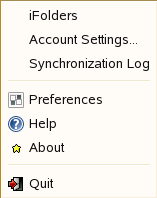

2.3 Configuring an iFolder Account
Use the iFolder Account Assistant to add and configure a new account. You must configure at least one iFolder account before you can create iFolders or share iFolders on your system. You can create only one account for any given iFolder host service, but you can have multiple accounts. You can log in separately to each account and be logged in concurrently to multiple accounts.
Multiple users with different local login identities can have iFolders on the same computer. iFolder prompts the active user to set up an account on the first time the iFolder client runs under that local user identity.
To configure a new account:
-
Access the , using one of the following methods:
- The first time you start iFolder under your current local login identity, iFolder prompts you to set up an iFolder account. Click to go directly to the .
- Right-click the iFolder Services icon
 in
the Notification area, select to open
the iFolder Preferences dialog box to the tab,
then click to open the .
in
the Notification area, select to open
the iFolder Preferences dialog box to the tab,
then click to open the .
-
Follow the on-screen instructions to specify the following values:
If your admin has set your encryption policy to on or enforced, iFolder will prompt you to enter your passphrase and select the Passphrase recovery agent. For more information on passphrase management see Section 3.10, Managing Passphrase for Encrypted iFolders
-
Enter your secret passphrase in the field and re-enter the same for verification.
Select to access automatically to the encrypted iFolder data during the current session. If you choose this option, iFolder can remember your passphrase. The next time you begin the login process, this passphrase exchange will be done automatically; no dialog box will appear.
Select the desired Recovery agent from the list and click .
-
Verify that the information you have entered is correct, return to previous pages to make corrections if necessary, then click to validate the settings by logging in to the iFolder server.
-
If you are prompted to , click to review the certificate information, then click to accept it if it is good.
If you do not accept the certificate, you cannot connect to the server.
-
On successful connection, click to close the iFolder Account Assistant.
iFolder synchronizes the user list for the specified account and identifies iFolders that are available for download. This initial download can take a few seconds to a few minutes, depending on the size of the user list for the account.
-
Verify that the account you set up appears in the list of accounts.
-
Right-click the iFolder Services icon
in
the Notification area, then select from
the menu to open the dialog
box to the tab. When you are connected to the iFolder server, the check box is selected.
-
Close the iFolder Preferences dialog box.
-
-
Set up iFolders for the account using either of these methods:
- Right-click the iFolder Services icon
in the Notification area, then select to
open the iFolder browser. Continue with Section 3.5, Creating and
Uploading an iFolder.

- If iFolders for this account are available for download from the server, an iFolder Notification message pops up adjacent to the Notification area of the taskbar. Click the message to open the iFolder browser. Continue with Section 3.8, Downloading an Available iFolder.
- Right-click the iFolder Services icon
in the Notification area, then select to
open the iFolder browser. Continue with Section 3.5, Creating and
Uploading an iFolder.